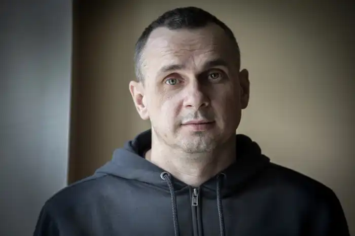
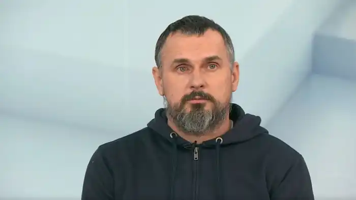
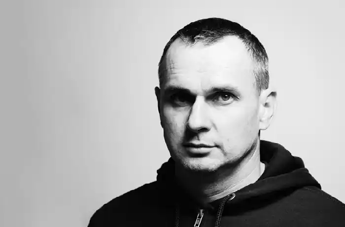

Олег Геннадійович Сенцов — український кінорежисер, сценарист та письменник, громадський активіст. Генеральний директор кінокомпанії "Край Кінема". Лауреат Премії Сахарова за свободу думки Європарламенту (2018) та Національної премії України імені Тараса Шевченка (2016).
Народився 13 липня 1976 року в Сімферополі. Освіту здобував у Київському національному економічному університеті, також студіював кінематографічні курси в Москві. Його перші фільми були короткометражного формату. Перший повнометражний фільм "Гамер" виходить у 2012 році, представлений на Міжнародному фестивалі в Роттердамі. Наступного року Сенцов презентує проєкт "Носоріг", однак роботу над ним перериває початок протестного руху в Україні. З початку Євромайдану Сенцов стає активним його учасником. Після анексії Криму намагається організовувати проукраїнські мітинги на півострові.
Біографія Олега Сенцова насичена драматичними подіями. 10 травня 2014 року його затримують в Криму російські силовики та звинувачують у тероризмі. У серпні 2015 року засуджений до 20 років тюрми. У знак протесту проти незаконного і несправедливого ув'язнення оголошує голодування. 7 вересня 2019 року повертається до України в межах обміну з Росією. Твори Олега Сенцова допомагають ближче зрозуміти відомого українського режисера, познайомитися з його світоглядом та думками. Автобіографічні збірки оповідань "Жизня" та "Маркетер" розповідають про те, що формувало погляди автора, його студентські роки та часи важливих внутрішніх пошуків та змін. Апокаліптичний роман "Другу також варто придбати" написаний в період ув'язнення. В кінці лютого 2022 року Олег доєднався до сил ТРО, був учасником боїв по звільненню Києва. 10 вересня 2023 року Олег Сенцов отримав легку контузію під час бойових дій біля Роботиного на Запорізькому напрямку. На грудень 2023 року Олег Сенцов обіймав посаду молодшого лейтенанта ЗСУ, командира штурмової роти 47 ОМбр.